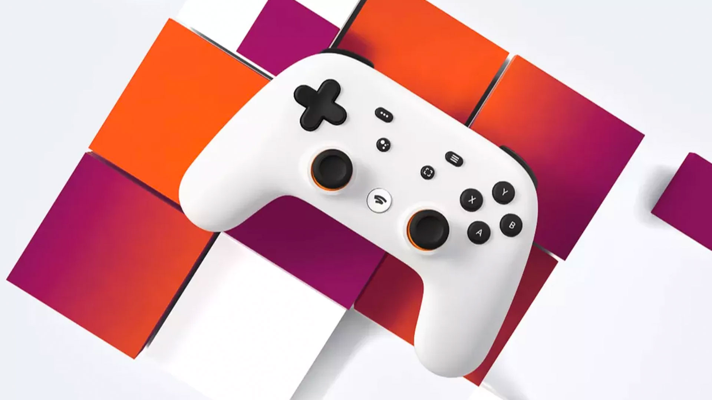

Unfortunately due to an NDA that I signed, there is only so much I can disclose about the work I did at Google. But here is everything I'm allowed to say!
During the Summer of 2020, I was a UXR intern for Google Stadia, Google's new cloud-based gaming platform. Over the three month internship I led two large-scale foundational studies, the first of which examined users’ holistic opinions of Stadia to impact future strategy to increase retention and engagement. The second examined the accessibility of button remapping features on Stadia to impact foundational understanding and project roadmaps.
For my first project I was part of the retention and engagement sector of the Commerce Team. I worked with 12 cross-functional stakeholders to design a qualitative study in which I examined users' holistic opinions of the Stadia platform. The ultimate goal of this research was to impact overall product strategy to improve retention and engagement on Stadia.
I collaborated with researchers on several Stadia teams, multiple project managers, the Stadia marketing team, and several other miscellaneous stakeholders to determine how to prioritize concepts within my study. I involved several of these key stakeholders in the process of writing an hour-and-a-half long interview script, which I had full discretion over. I then identified target interview participants, created a screening survey, and created a pre-interview activity for participants to complete prior to the interviews.
The interviews themselves were semi-structured with different projective methodologies and concept tests distributed throughout. I personally conducted 15 of the 25 total 90-minute interviews. I then analyzed all of the results and drew major conclusions from the analysis.
I conducted two separate read-outs of the results, each one being organized slightly differently in order to cater to the different audiences. The results of the study are currently being used to improve company strategy to increase retention and engagement on Stadia.
For my second project I chose to pursue an accessibility-related issue. After conducting a competitive analysis, I worked with 7 cross-functional stakeholders to design a qualitative study in which I examined differently-abled users' use of videogame controller button remapping features. The ultimate goal of this research was to impact the hardware team's foundational understanding of button remappings and influence future project roadmaps.
Prior to designing the study, I conducted a competitive analysis of other current-gen videogame consoles.
For the study itself I collaborated with accessibility experts, researchers with experience in the accessibility sphere, several different project managers, a designer, and a harware engineer to determine how to prioritize concepts within my study. I involved several of these key stakeholders in the process of writing an hour-long interview script. I then identified target interview participants, created a screening survey, and conducted pilot interviews prior to conducting the study itself.
The interviews themselves were semi-structured, but much more loosely so than in my first project to allow for more in-depth dives into anything I found particularly interesting. I personally conducted all 6 of the 60-minute interviews. I then analyzed all of the results and drew major conclusions from the analysis.
Similar to my first project, I conducted two separate read-outs of the results, each one being organized slightly differently in order to cater to the different audiences. The results of the study immediately informed Stadia of the importance of certain button remapping features, and are currently being used to adjust project roadmaps within teams that work with the Stadia controller.